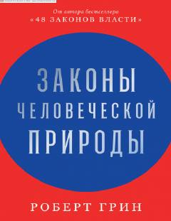

ITInson xulq-atvorining sirli qonuniyatlari va psixologik tabiatini ochib beruvchi qo'llanma.
Ushbu kitob inson xulq-atvorining tub sabablari, hissiyotlarning ortidagi yashirin mexanizmlar va boshqalar bilan munosabatlardagi murakkab vaziyatlarni tushunishga yordam beradi. Robert Grinning mazkur asari o'zini va atrofdagilarni chuqurroq anglash orqali psixologik tuzoqlardan qochish ko'nikmalarini o'rgatadi.